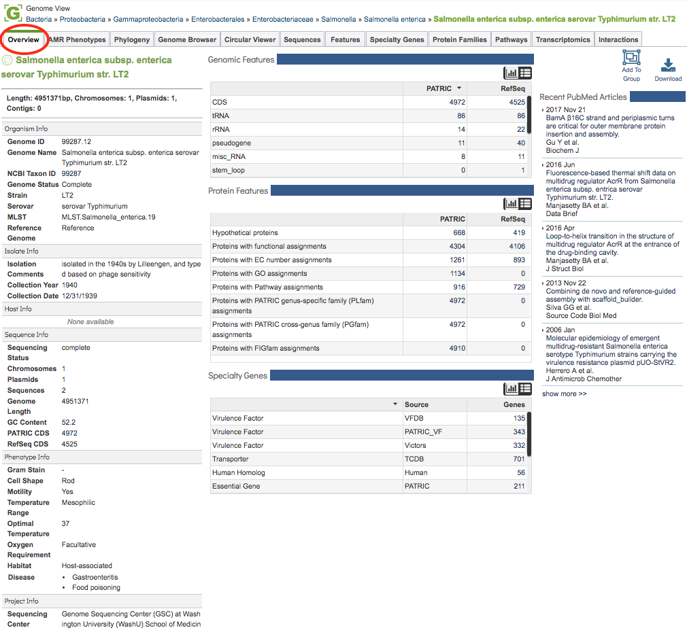

Genome Overview¶
Overview¶
The Genome Overview Tab provides summary information for the selected genome including genome sequence information, Genome Metadata, Genomic Features, Protein Features, Specialty Genes, and related PubMed Articles.
See also¶
Accessing the Genome Overview¶
Clicking the Overview Tab in a Genome View displays the Genome Overview Page, shown below.

The Genome Overview Page summarizes information regarding the genome sequence information, Genome Metadata, Genomic Features, Protein Features, Specialty Genes, and related PubMed Articles. Each section of the page is described in more detail below.
Sequence Information¶
The top left section of the page provides a summary including genome length (in basepairs) and numbers of chromosomes, plasmids, and contigs.
Genome Metadata¶
The left-hand column on the page provides a complete listing of all available genome metadata, including information regarding the Organism, Isolate, Host, Sequence, Phenotype, (Sequencing) Project, and Other. See Genome Metadata for a more detailed description genome metadata.
Features, Proteins, Specialty Genes¶
The middle column provides summary tables (or histogram charts, selectable using the Chart/Table buttons on the top left of the section) for Genomic Features, Protein Features, and Specialty Genes associated with the genome. See Genome Annotations, Protein Families Tab, and Data, Specialty Genes, respectively for more details on these annotated feature types.
Recent PubMed Articles¶
The right-hand column displays recent articles from PubMed directly in real time query (via PubMed API) for literature related to the selected genome. The title links directly to the article on PubMed.
Tools¶
The upper right-hand side of the page (above the Recent PubMed Articles column) provides buttons for adding the genome to a group and downloading the genome sequence, features, etc., in several formats.